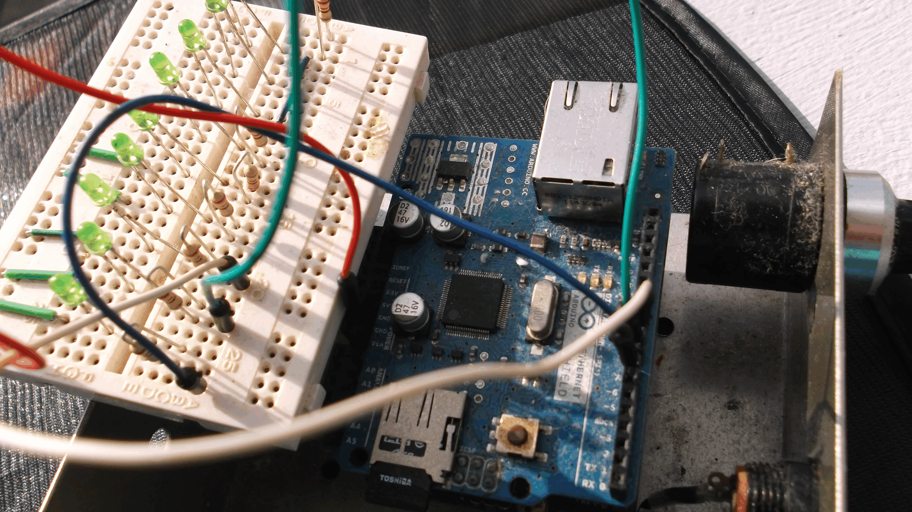
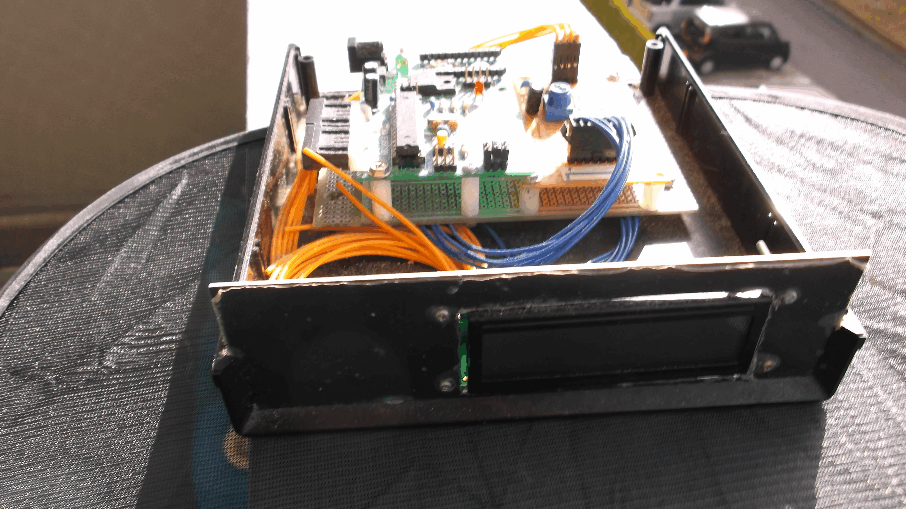
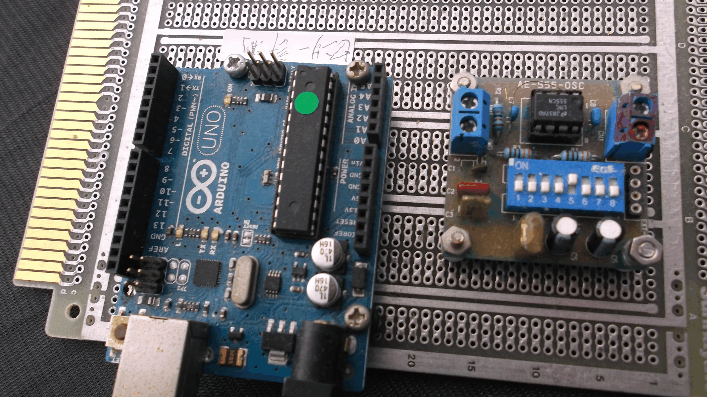

Ａｒｄｕｉｎｏについて
ＡＲＤＵＩＮＯとＥｔｈｅｒｎｅｔ基盤でインターネット通信を行う。
温度、光度や磁力などアナログデーターをデジタルに変換してＥｔｈｅｒｎｅｔ基盤に
ＡＲＤＵＩＮＯの出力確認用ＬＥＤをＰＣ画面でＯＮ、ＯＦＦのコントロールすることができます。
この基盤により有線インターネットの回路を確立することができ遠方からのＡＲＤＵＩＮＯを操作できる。
ＡｒｄｕｉｎｏによるＩ＊２でのデーダー表示

取り組んだデーターを表示する。Ａｒｄｕｉｎｏ基盤の４本有るアナログ入力端子から
取り込んだデーターにバイパスとなる数値を掛け現行世界に通じるデーターとなる。
そのデーターにタグを付け表示を行えば
ＡｒｄｕｉｎｏによるデーターをＥＸＳＥＬシートにＵＳＢで転送する
４箇所のアナログ／デジタル変換で得られたデーターをＡｒｄｕｉｎｏのプログラムにより
加工修正されたデーターをＥＸＳＥＬシートに配列良く転送する事が出来る
またＥＸＳＥＬ内でＭａｃｒｏ関数を使い自動で計算処理も行うことも出来る